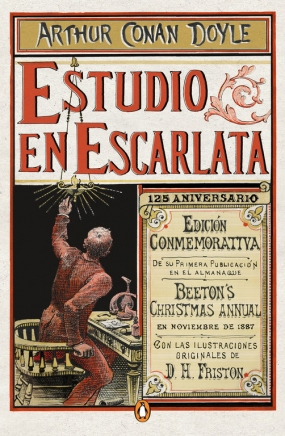

Un Estudio en Escarlata
1878. John Watson es un médico militar retirado que busca un piso donde vivir el resto de sus días en paz. Un encuentro con su viejo amigo Stamford lo conduce a Baker Street. Allí, conocerá a su nuevo compañero de piso: un excéntrico hombre que parece saberlo todo sobre él sin necesidad de preguntarle. ¿Su nombre? Sherlock Holmes. El médico pensaba que volver a Londres le proporcionaría calma y descanso, pero Sherlock Holmes resulta ser un conocido detective al que Scotland Yard recurre con frecuencia y, tras mudarse a Baker Street, John se ve envuelto en un misterioso caso de asesinato. En estos términos, Sherlock y Watson se adentran en un entresijo criminal que, aunque a primera vista parece un simple asesinato, posee todos los componentes para tratarse de una venganza: unas misteriosas letras escritas con sangre en la pared y una extraña relación con la iglesia mormona son las principales pistas que poseen. ¿Podrán un exmédico del ejército y un detective con cierta debilidad por las drogas llegar al fondo del misterio? Estudio en escarlata, escrita desde el punto de vista de Watson, fue la historia que dio lugar al universo de Sherlock Holmes. De esta se desprenden muchas más aventuras protagonizadas por la pareja, como El perro de los Baskerville o El misterio de los cuatro. Arthur Conan Doyle supo plasmar el pragmatismo y la lógica de Sherlock Holmes y combinarlo con el escepticismo de John Watson, un hombre más bien ordinario, para dar lugar a una de las mejores combinaciones en cuanto a psicología de personajes se refiere. Pero no fue solo eso lo que hizo de la saga uno de los clásicos policiales más leídos en la época. Arthur también se esmeró en la complejidad de cada novela, hilando varios sucesos aparentemente distintos en una única conclusión y dejando al lector atónito ante la solución del caso que él mismo había intentado descifrar. En definitiva, Sherlock Holmes constituye el mundo detectivesco perfecto para todos los amantes del misterio y una lectura obligatoria para quienes quieran adentrarse en el género policíaco.
Referencias
- https://enciclopediadelenguayliteratura.com/literatura-contemporanea/
- Avanza Noveno 9